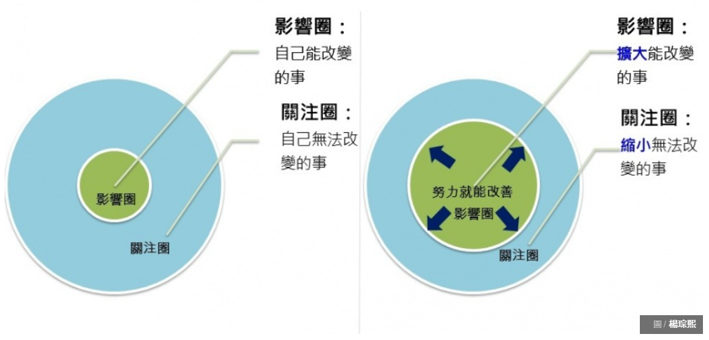

Loading...
name: inverse layout: true class: center, middle, inverse --- # 人生路引 ## 第 3 章 豐盛應許，來自思維習慣 .footnote[Hong, Jian-Ching] --- layout: false # 目錄 1. 給兒子的 18 堂商業思維課 2. 心態致勝 3. 為什麼他們擁有億萬財富 而你卻沒有 4. 習慣致富 5. 習慣致富 人生實踐版 - 加碼！ --- ## 給兒子的 18 堂商業思維課 - 先控制可控的部分，不可控的部分就隨綠 - 接受不可控，專注可控的部份，把自己變強<br /> 變強之後就會有影響力，再去改變之前那些「不可控」 - 這世界是彩色，黑白與灰色三重空間所組成，<br /> 不要有太多「非黑即白」的思想，即二分法思維<br /> 遇到選 A 或 B 的問題時，提醒自己有沒有第三種方法？ - 在不完美下，做出盡可能好的決定 - Timeboxing --- ## 關注圈 vs. 影響圈 - 與成功有約  - 盡人事、聽天命 .ref[圖片來源：[關注圈 vs 影響圈，聚焦在哪一個、決定你的成就！|經理人](https://www.managertoday.com.tw/columns/view/57832)] --- ## 自主程度的高低 - 與成功有約 - 可直接控制的問題 - 改變習慣，第二部「個人的成功」討論的習慣一、二、三即屬於這一類 - 可間接控制的問題 - 改進發揮影響力，第三部「公眾的成功」的習慣四、五、六中有所討論 - 無能為力的問題 - 改變嘴角的線條，以微笑、真誠平和的態度接納這些問題 ### 相關延伸 - 課題分離 - [[被討厭的勇氣]] - 老天爺的事、別人的事、自己的事 - 遇見未知的自己 --- ## 心態致勝 - 固定型 vs 成長型 - 定型心態 (fixed mindset) vs 成長心態 (growth mindset) - 避免二分法思維：每個人或多或少都有固定型思維跟成長型思維； - 可能一個人對 A 是定型心態，對 B 卻是成長心態 (畫畫、英文、程式...etc) ### 相關延伸 - 決定論 vs 目的論 - [[被討厭的勇氣]] - 外在歸因 vs 內在歸因 - [[歸因論]] - [[了凡四訓]] - 求在我，不獨得道德仁義，亦得功名富貴；內外雙得，是求有益於得也 - 若不反躬內省，而徒向外馳求，則求之有道，而得之有命矣，內外雙失，故無益 --- ## 為什麼他們擁有億萬財富 而你卻沒有 - 不被智商綁手腳 - 分析性 - 創造性 - 實踐性 - 啟動心理防護罩 - 無視 - 把批評化為激勵 - 找對池塘釣大魚 - 藍海 --- ## 習慣致富 - 1 心態 -> 行動 -> 結果 自註：心態可以從別人身上學到，行動只能靠自己 - 你必須努力工作，才能有錢到不必努力工作 - 複利的力量需要時間才能發揮魔法 - 金錢和成功是活在害怕的另一邊 目標的正確定義： - 一、實體活動 - 二、百分之百可實現，表示你擁有執行所需實體活動的知識和技能 設法和立志成功的人建立關係 這些人的特質： - 快樂、樂觀、感思、熱情、心胸開放、終身學習 自註：反過來說，讓自己成為這樣的人 --- ## 習慣致富 - 2 推拖延遲是恐懼和害怕造成的 對生活的一切表示感恩 創建[[成功日誌]] 訓練別人如何對待我 - 停止對一切說「好」 - 不要只為了迎合別人而委屈自己 - 不要猶豫不決，堅持你相信的事情 --- ## 習慣致富 - 3 第二十八個富習慣 - 努力每天快樂 - 一、管理期望 - 二、練習樂觀 - 每日冥想、願景板、每日肯定、消除命令、為未來生活編寫腳本 - 三、活在當下 - 四、克服害怕 - 五、當別人的導師 - 六、擔任志工 - 七、運動 - 八、學習新事物 - 九、冥想 - 十、練習感恩 - 十一、和其它快樂的人交往 - 十二、笑 - 十三、追求夢想和目標 - 十四、做有創意的事 - 十五、追求主要目的或喜歡的事物 --- ## 習慣致富 人生實踐版 好習慣 - 個人歸納 - 健康 - 運動、飲食、充足睡眠 - 成長 - 閱讀、自我改善 - 嘗試 - 學習新知、新技能、新活動 - 目標 - 設定夢想、人生目標，慢慢靠近 - 正向 - 樂觀、冥想、感恩 - 人際 - 跟相同價值觀的人來往 - 財務 - 節儉，儲蓄，投資、設定預算並嚴格執行 - 少花錢、多存錢、投資差額 - [[賺錢-更賺自由的FIRE理財族]]